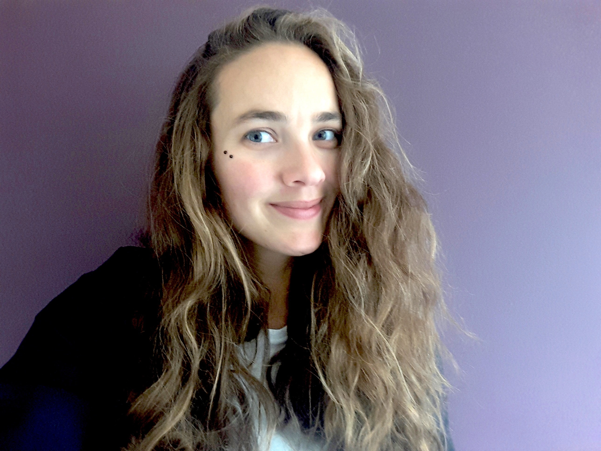

Ivana Balažević

I am a Research Scientist at DeepMind.
I recently finished my PhD at The University of Edinburgh, where I was supervised by Tim Hospedales and Ivan Titov. The focus of my PhD was on learning representations of entities and relations from knowledge graph data. During my PhD, I interned at the Samsung AI Center Cambridge and at Facebook AI Research (FAIR) with Sebastian Riedel. I hold a BSc in Computer Science at the Faculty of Electrical Engineering and Computing, University of Zagreb, an MSc in Computer Science at the Technische Universität Berlin and an MSc in Data Science at the University of Edinburgh.
Inspired by research in human cognition which suggests that humans reason about the world in terms of objects and their relations, I am interested in structured representations of knowledge which are easily accessible, modifiable and interpretable, as a step toward more human-like intelligence.
Publications
Cutting Down on Prompts and Parameters: Simple Few-Shot Learning with Language Models
Robert L. Logan IV, Ivana Balažević, Eric Wallace, Fabio Petroni, Sameer Singh, Sebastian Riedel Findings of ACL, 2022
[paper] [code]
Interpreting Knowledge Graph Relation Representation from Word Embeddings
Carl Allen*, Ivana Balažević*, Timothy Hospedales, ICLR, 2021
[paper]
Multi-relational Poincaré Graph Embeddings
Ivana Balažević, Carl Allen, Timothy Hospedales, NeurIPS, 2019
[paper] [code]
What the Vec? Towards Probabilistically Grounded Embeddings
Carl Allen, Ivana Balažević, Timothy Hospedales, NeurIPS, 2019
[paper]
TuckER: Tensor Factorization for Knowledge Graph Completion
Ivana Balažević, Carl Allen, Timothy Hospedales, EMNLP, 2019 (Oral)
[paper] [code] [slides][video]
Hypernetwork Knowledge Graph Embeddings
Ivana Balažević, Carl Allen, Timothy Hospedales, ICANN, 2019 (Oral)
[paper] [code] [slides]
Preprints
Learning the Prediction Distribution for Semi-Supervised Learning with Normalising Flows
Ivana Balažević*, Carl Allen*, Timothy Hospedales, arXiv:2007.02745, 2020
[paper] [code]
A Probabilistic Framework for Discriminative and Neuro-Symbolic Semi-Supervised Learning
Carl Allen, Ivana Balažević, Timothy Hospedales, arXiv:2006.05896, 2020
[paper]
Workshops
Cutting Down on Prompts and Parameters: Simple Few-Shot Learning with Language Models
Robert L. Logan IV, Ivana Balažević, Eric Wallace, Fabio Petroni, Sameer Singh, Sebastian Riedel NeurIPS ENLSP Workshop, 2021 (Best Poster
[paper] [code]
Benchmark and Best Practices for Biomedical Knowledge Graph Embeddings
David Chang, Ivana Balažević, Carl Allen, Daniel Chawla, Cynthia Brandt, Andrew Taylor
ACL BioNLP Workshop, 2020
[paper]
TuckER: Tensor Factorization for Knowledge Graph Completion
Ivana Balažević, Carl Allen, Timothy Hospedales, ICML AMTL Workshop, 2019
[paper]
Links


Contact
Email: balazevic@deepmind.com